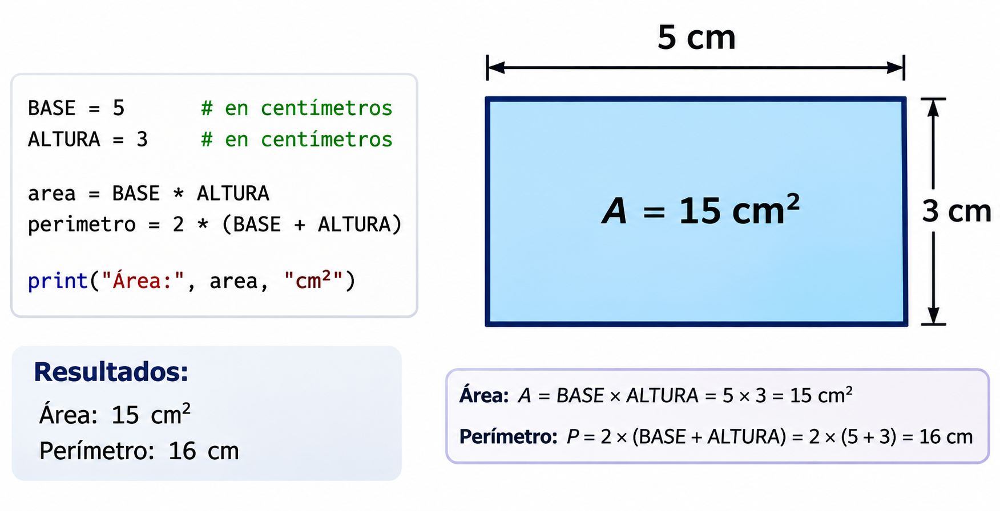

Código
import keyword
print(len(keyword.kwlist))35Código
print(keyword.iskeyword("if"))TrueCódigo
print(keyword.iskeyword("edad"))FalseFecha: 05 de noviembre, 2026
En los capítulos anteriores creamos muchas variables. En este capítulo veremos:
assert y try / except para detectar y manejar errores.raise, pass, break, continue, return y exit().Este último tema prepara el capítulo de condicionales (if, elif, else).
Las palabras reservadas (keywords) tienen un significado especial en Python, por lo que no podemos usarlas como nombres de variables. Python 3 tiene 35:
False |
None |
True |
and |
as |
assert |
async |
await |
break |
class |
continue |
def |
del |
elif |
else |
except |
finally |
for |
from |
global |
if |
import |
in |
is |
lambda |
nonlocal |
not |
or |
pass |
raise |
return |
try |
while |
with |
yield |
Podemos consultarlas desde Python con el módulo keyword:
import keyword
print(len(keyword.kwlist))35print(keyword.iskeyword("if"))Trueprint(keyword.iskeyword("edad"))FalseSi intentamos usar una palabra reservada como nombre, obtenemos un SyntaxError:
class = "Taller de Cómputo" # SyntaxError: invalid syntaxAdemás existen palabras reservadas suaves (soft keywords): match, case, type y _. Solo son especiales en ciertos contextos, así que Python permite usarlas como nombres, pero es mejor evitarlas.
Un nombre válido en Python (también llamado identificador) debe cumplir estas reglas obligatorias:
| Regla | Válido | Inválido |
|---|---|---|
Solo puede contener letras, dígitos y guion bajo (_). |
nota_final |
nota-final, nota final, nota$ |
| No puede empezar con un dígito. | lugar2 |
2lugar |
| No puede ser una palabra reservada. | clase |
class |
| Distingue mayúsculas de minúsculas. | edad, Edad y EDAD son tres variables distintas. |
edad = 20
Edad = 30
EDAD = 40
print(edad, Edad, EDAD)20 30 40Python acepta letras con acentos y la ñ en los nombres (año = 2026 es válido), pero se recomienda usar solo letras sin acentos (anio, anno o year) para evitar problemas al compartir tu código con otras computadoras o teclados.
Las reglas dicen qué nombres funcionan; las convenciones dicen qué nombres son buenos. La comunidad de Python sigue la guía de estilo PEP 8.
| Elemento | Convención | Ejemplo |
|---|---|---|
| Variables y funciones | snake_case: minúsculas separadas por guion bajo. |
promedio_final, calcular_area() |
| Constantes | MAYUSCULAS con guion bajo. |
PI = 3.14159, CALIFICACION_MAXIMA = 10 |
| Clases | PascalCase: cada palabra inicia con mayúscula. |
Estudiante, MatrizCuadrada |
Módulos (archivos .py) |
Nombres cortos en minúsculas. | operaciones.py |
| Uso “interno” | Empiezan con un guion bajo. | _temporal |
area_triangulo dice más que a o x1.i en un ciclo o x, y en una fórmula matemática.l (ele minúscula), O (o mayúscula) e I (i mayúscula) como nombres: se confunden con 1 y 0.list, sum, max, min, len, type, id, str o input (ver más abajo).| Poco claro | Mejor |
|---|---|
a = 5 |
base = 5 |
x = a * h / 2 |
area_triangulo = base * altura / 2 |
l = [8, 9, 10] |
calificaciones = [8, 9, 10] |
numeroDeEstudiantes = 30 |
numero_estudiantes = 30 |
t = 0.16 |
TASA_IVA = 0.16 |
Python no marca error si usas sum o max como nombre de variable, pero a partir de ese momento pierdes la función original:
sum = 10 # Ahora "sum" apunta a un entero, no a la función
sum([1, 2, 3]) # TypeError: 'int' object is not callableTypeError: 'int' object is not callablePara recuperar la función, elimina la variable con del:
del sum
sum([1, 2, 3])6Un programa se escribe una vez, pero se lee muchas veces (por tus compañeros, tu profesora y tu “yo del futuro”).
| Práctica | En lugar de | Escribe |
|---|---|---|
Espacios alrededor de = y de los operadores. |
total=a+b*2 |
total = a + b * 2 |
| Un espacio después de cada coma. | print(a,b,c) |
print(a, b, c) |
| Una instrucción por línea. | a = 1; b = 2 |
a = 1 y en otra línea b = 2 |
| Indentación de 4 espacios (no tabuladores). | ····print("hola") |
|
| Líneas cortas (máximo 79 caracteres). | Divide las líneas largas. | |
| Constantes en lugar de “números mágicos”. | precio * 0.16 |
precio * TASA_IVA |
| Comentarios que expliquen el por qué. | x = x + 1 # suma 1 |
intentos = intentos + 1 # el usuario falló otra vez |

# Programa: área y perímetro de un rectángulo
# Autora: Ana López
# Fecha: 03/11/2026
BASE = 5 # en centímetros
ALTURA = 3 # en centímetros
area = BASE * ALTURA
perimetro = 2 * (BASE + ALTURA)
print("Área:", area, "cm²")Área: 15 cm²print("Perímetro:", perimetro, "cm")Perímetro: 16 cmPython incluye un “poema” con su filosofía de diseño. Ejecútalo:
Algunas frases importantes: “Bello es mejor que feo”, “Explícito es mejor que implícito”, “Simple es mejor que complejo” y “La legibilidad cuenta”.
La programación defensiva consiste en escribir código que anticipa lo que puede salir mal: datos incorrectos, listas vacías, divisiones entre cero o tipos inesperados.
Su objetivo es que, si algo falla, el programa falle pronto y con un mensaje claro, en lugar de continuar y producir un resultado incorrecto en silencio.
Observa este programa. ¿Ves el problema?
calificaciones = [9, 8.5, 95] # Alguien escribió 95 en lugar de 9.5
promedio = sum(calificaciones) / len(calificaciones)
print("Promedio:", promedio)Promedio: 37.5Python no marca ningún error, pero el promedio de 37.5 no tiene sentido en una escala de 0 a 10. El resultado correcto, con 9.5, sería 9.0.
Un error silencioso (también llamado error lógico) ocurre cuando el programa se ejecuta sin problemas, pero produce un resultado incorrecto. Python no muestra ningún mensaje porque, para él, todo está bien: sumar 9 + 8.5 + 95 y dividir entre 3 es una operación perfectamente válida. Python hace lo que escribimos, no lo que queríamos hacer.
| Error con mensaje | Error silencioso (lógico) | |
|---|---|---|
| ¿El programa se detiene? | Sí, con un mensaje como TypeError o NameError. |
No, termina con normalidad. |
| ¿Cómo nos enteramos? | Python nos avisa y señala la línea. | Solo si revisamos el resultado y notamos que no tiene sentido. |
| Ejemplo | "Edad: " + 20 → TypeError. |
Un promedio de 37.5 en una escala de 0 a 10. |
| ¿Qué tan peligroso es? | Poco: es fácil encontrarlo y corregirlo. | Mucho: el resultado incorrecto se puede usar sin que nadie lo note. |
¿Por qué es tan peligroso? Imagina que ese promedio se usa para decidir quién aprueba el curso, o que el resultado de un cálculo se usa en un reporte o en otro programa: el error se propaga y cada vez es más difícil saber de dónde vino.
Todos estos programas se ejecutan sin mensajes de error, pero dan un resultado incorrecto:
| Código | Resultado obtenido | Resultado esperado | ¿Qué salió mal? |
|---|---|---|---|
promedio = 6 + 10 / 2 |
11.0 |
8.0 |
Jerarquía de operaciones: la división se hace antes que la suma. Faltan paréntesis: (6 + 10) / 2. |
mitad = 17 // 2 |
8 |
8.5 |
// es la división entera (descarta los decimales); la división normal es /. |
math.sin(90) |
0.894 |
1.0 |
Las funciones trigonométricas usan radianes, no grados: math.sin(math.radians(90)). |
total = "8" + "9" |
"89" |
17 |
Los datos son texto: + los une en lugar de sumarlos. Hay que convertirlos con int(). |
area = 3.14 * radio ** 2 (con radio = 2) |
12.56 |
12.566... |
Una aproximación de \(\pi\) pierde precisión; usa math.pi. |
0.1 + 0.2 == 0.3 |
False |
True |
Los decimales se guardan de forma aproximada en la computadora; para compararlos usa math.isclose(). |
Compruébalo tú: ejecuta el código y compara cada resultado con el esperado.
Como Python no nos avisa, nosotros debemos verificar los resultados:
37.5. Pregúntate siempre: “¿este número tiene sentido?”.[8, 10] debe ser 9; el seno de 90° debe ser 1.print() para seguir el cálculo paso a paso.type(): muchos errores silenciosos ocurren porque un número en realidad es texto ("8").assert en esta misma sección.Aplicando el punto 5, el error del ejemplo se hace visible con una sola línea:
calificaciones = [9, 8.5, 95]
print("Mayor calificación:", max(calificaciones)) # 95: ¡fuera del rango de 0 a 10!Mayor calificación: 95La programación defensiva busca justamente esto: convertir los errores silenciosos en errores con mensaje, para que el programa nos avise en cuanto algo no tiene sentido.
Antes de defendernos de los errores hay que saber leerlos. La última línea de un mensaje de error indica el tipo de error y una descripción:
| Error | ¿Cuándo ocurre? | Ejemplo |
|---|---|---|
SyntaxError |
El código está mal escrito. | 2lugar = "Luis" |
IndentationError |
La indentación es incorrecta. | Un print con espacios de más. |
NameError |
Usas una variable que no existe. | print(resultado) sin haberla creado. |
TypeError |
La operación no es válida para ese tipo. | "Edad: " + 20 |
ValueError |
El tipo es correcto, pero el valor no. | int("diez") |
ZeroDivisionError |
Divides entre cero. | 10 / 0 |
IndexError |
El índice no existe en la lista. | [1, 2, 3][5] |
KeyError |
La clave no existe en el diccionario. | {"a": 1}["b"] |
AttributeError |
El objeto no tiene ese atributo o método. | (1, 2).append(3) |
AssertionError |
Falló una verificación con assert. |
assert 5 < 3 |
assert: verificar que algo sea verdaderoLa instrucción assert verifica una expresión booleana. Si es True, el programa continúa sin hacer nada; si es False, el programa se detiene con un AssertionError y el mensaje que escribimos:
assert condicion, "Mensaje si la condición es falsa"La condición es una pregunta cuya respuesta es True o False, por ejemplo len(calificaciones) > 0 (¿la lista tiene elementos?) o max(calificaciones) <= 10 (¿la mayor calificación es a lo más 10?). Estudiaremos estas preguntas, llamadas expresiones booleanas, en el capítulo de Condicionales en Python.
Apliquémoslo al ejemplo del error silencioso (este editor se ejecuta solo al cargar la página; observa que el print() final nunca se ejecuta):
Ahora el programa se detiene antes de calcular un promedio incorrecto y nos dice exactamente qué revisar. Cambia 95 por 9.5 y presiona Run Code: las tres verificaciones pasan y se muestra el promedio.
assert es ideal para detectar errores de programación mientras desarrollas. Para validar datos que escribe un usuario, lo recomendable es decidir qué hacer con un condicional, como veremos en el capítulo de condicionales.
try / except: capturar un error sin detener el programaassert y los errores detienen el programa. A veces preferimos atrapar el error y decidir qué hacer. Para eso existe try / except:
try:
# Código que podría fallar
except TipoDeError:
# Qué hacer si ocurre ese errorPython intenta ejecutar el bloque try. Si ocurre el error indicado, en lugar de detenerse, ejecuta el bloque except:
texto = "diez"
try:
numero = int(texto)
print("Número convertido:", numero)
except ValueError:
print("Aviso: no se puede convertir", repr(texto), "en un número")Aviso: no se puede convertir 'diez' en un númeroprint("El programa continúa")El programa continúaPodemos atrapar varios tipos de error y agregar un bloque finally, que se ejecuta siempre, haya o no error:
dividendo = 10
divisor = 0
try:
resultado = dividendo / divisor
print("Resultado:", resultado)
except ZeroDivisionError:
print("Error: no se puede dividir entre cero")
except TypeError:
print("Error: los dos valores deben ser números")
finally:
print("Fin del cálculo")Error: no se puede dividir entre cero
Fin del cálculoAtrapa siempre un tipo de error específico (except ValueError:). Si escribes solo except:, ocultarás también errores que no esperabas y será más difícil encontrar fallas en tu programa.
Normalmente Python ejecuta las instrucciones de arriba hacia abajo. Las estructuras de control de interrupción cambian ese flujo: detienen el programa, salen de un bloque o saltan instrucciones. Todas son palabras reservadas (o funciones) de Python:
| Instrucción | ¿Qué hace? | ¿Dónde se usa? | Se estudia en… |
|---|---|---|---|
assert |
Detiene el programa si una condición es falsa. | En cualquier parte. | Este capítulo. |
raise |
Lanza (provoca) un error con un mensaje propio. | En cualquier parte. | Este capítulo y condicionales. |
try / except / finally |
Atrapa un error para que el programa no se detenga. | En cualquier parte. | Este capítulo. |
pass |
No hace nada; reserva el lugar de un bloque que aún no escribes. | Dentro de if, for, while, funciones… |
Este capítulo. |
break |
Sale inmediatamente de un ciclo. | Solo dentro de for o while. |
Ciclos for y while. |
continue |
Salta al siguiente paso de un ciclo. | Solo dentro de for o while. |
Ciclos for y while. |
return |
Termina una función y regresa un valor. | Solo dentro de funciones (def). |
Funciones. |
exit() / sys.exit() |
Termina todo el programa. | Scripts de Python (.py). |
Este capítulo. |
raise: lanzar un error propioraise produce un error del tipo que elijamos, con un mensaje claro para quien use el programa:
raise ValueError("La calificación debe estar entre 0 y 10")ValueError: La calificación debe estar entre 0 y 10En el capítulo de condicionales lo combinaremos con if para lanzar el error solo cuando un dato sea incorrecto.
pass: un bloque que todavía no escribesPython no permite bloques vacíos. pass sirve para “apartar el lugar” mientras terminas tu programa:
try:
resultado = 10 / 0
except ZeroDivisionError:
pass # Por ahora, ignorar el error (lo completaremos después)break y continue: interrumpir un cicloEstas dos instrucciones solo funcionan dentro de un ciclo (for o while), que veremos más adelante. Su idea es:
break = “ya terminé, sal del ciclo aunque falten elementos”. Por ejemplo, dejar de buscar en cuanto encuentras un divisor de un número.continue = “sáltate este y sigue con el siguiente”. Por ejemplo, ignorar los datos vacíos de una lista.Si escribes break fuera de un ciclo, Python marca un error:
exit(): terminar el programaEn un script (.py) que se ejecuta desde la Terminal, exit() o sys.exit() terminan el programa completo:
import sys
edad = -5
sys.exit("Error: la edad no puede ser negativa") # El programa termina aquí
print("Esta línea nunca se ejecuta")No uses exit() en Jupyter, Google Colab o Quarto: detiene el kernel (el programa que ejecuta tu código) y tendrás que reiniciarlo. En esos entornos es mejor usar raise o assert.
assert siempre detiene el programa. ¿Y si queremos mostrar un aviso y continuar, o hacer algo distinto según el caso? Para eso existen los condicionales (if, elif, else), que veremos en el capítulo Condicionales en Python.
Resuelve los ejercicios en los editores interactivos. Recuerda que lo que escribas no se guarda al recargar la página.
El siguiente programa no funciona porque todos los nombres de variables son inválidos. Corrígelos para que el programa se ejecute y muestre los cuatro valores.
Hay cuatro errores distintos: un nombre que empieza con un dígito, uno con guion medio, una palabra reservada y uno con espacio. Recuerda cambiar también los nombres dentro del print().
segundo_lugar = "Luis"
mi_calificacion = 9.5
clase = "Taller de Cómputo"
nombre_completo = "Ana López"
print(segundo_lugar, mi_calificacion, clase, nombre_completo)El programa funciona, pero es difícil saber qué calcula. Cambia los nombres de las variables por nombres descriptivos en snake_case y usa una constante para el valor que nunca cambia. ¿Qué calcula el programa?
3.14159 es aproximadamente \(\pi\). Las fórmulas \(\pi r^2\) y \(2 \pi r\) corresponden a una figura muy conocida.
El programa calcula el área y el perímetro de un círculo de radio 4.
PI = 3.14159
radio = 4
area_circulo = PI * radio ** 2
perimetro_circulo = 2 * PI * radio
print("Área:", area_circulo)
print("Perímetro:", perimetro_circulo)Ejecuta el código. ¿Por qué aparece TypeError: 'int' object is not callable? Corrígelo cambiando el nombre de la variable de la primera línea por una constante con un nombre adecuado. La última línea debe regresar la mejor calificación.
En la primera línea, max deja de ser la función y pasa a ser el número 10. Cambia ese nombre (por ejemplo, CALIFICACION_MAXIMA) en las dos líneas donde aparece como número.
CALIFICACION_MAXIMA = 10
calificaciones = [8, 9.5, 7]
print("Escala de 0 a", CALIFICACION_MAXIMA)
mejor = max(calificaciones)
mejor # 9.5assert antes de calcular el promedio para verificar que:
CALIFICACION_MINIMA.CALIFICACION_MAXIMA.95 debía ser 9.5) y vuelve a ejecutar. La última línea debe regresar el promedio.Usa las funciones integradas len(), min() y max(): assert min(calificaciones) >= CALIFICACION_MINIMA, "mensaje".
CALIFICACION_MINIMA = 0
CALIFICACION_MAXIMA = 10
calificaciones = [9, 8.5, 9.5]
assert len(calificaciones) > 0, "La lista de calificaciones está vacía"
assert min(calificaciones) >= CALIFICACION_MINIMA, "Hay calificaciones menores que 0"
assert max(calificaciones) <= CALIFICACION_MAXIMA, "Hay calificaciones mayores que 10"
promedio = sum(calificaciones) / len(calificaciones)
promedio # 9.0Cada línea del editor produce un error diferente. Quita el # de una línea a la vez, ejecuta y anota el tipo de error. Después escribe cómo lo evitarías.
| Línea | Tipo de error | ¿Cómo lo evitarías? |
|---|---|---|
10 / 0 |
||
int("diez") |
||
[1, 2, 3][5] |
||
{"a": 1}["b"] |
||
"Edad: " + 20 |
||
print(resultado) |
El tipo de error aparece al inicio de la última línea del mensaje, por ejemplo ZeroDivisionError: division by zero. Revisa la tabla de la sección Leer los mensajes de error.
| Línea | Tipo de error | ¿Cómo lo evitarías? |
|---|---|---|
10 / 0 |
ZeroDivisionError |
Verificar que el divisor sea distinto de cero: assert divisor != 0. |
int("diez") |
ValueError |
Verificar que el texto contenga solo dígitos: "diez".isdigit(). |
[1, 2, 3][5] |
IndexError |
Verificar que el índice sea menor que len(lista). |
{"a": 1}["b"] |
KeyError |
Verificar con "b" in diccionario o usar diccionario.get("b"). |
"Edad: " + 20 |
TypeError |
Convertir el número a texto: "Edad: " + str(20). |
print(resultado) |
NameError |
Crear la variable antes de usarla y revisar que el nombre esté bien escrito. |
Completa el programa para que intente convertir texto en número entero. Si no es posible, debe mostrar un aviso y guardar None (ausencia de valor) en numero, sin detener el programa. Deja numero en la última línea.
Prueba con "diez", "10" y "3.5".
Los espacios en blanco son las palabras try y except. No olvides los dos puntos al final de cada una.
texto = "diez"
try:
numero = int(texto)
except ValueError:
print("Aviso: no se puede convertir", repr(texto), "en un número entero")
numero = None
print("El programa continúa")
numero # NoneCon "3.5" también obtienes el aviso: int() no convierte textos con punto decimal. Para eso usarías float().
Cada línea de este programa se ejecuta sin errores, pero las tres dan un resultado incorrecto. Corrígelas para obtener:
promedio: el promedio de 6 y 10, que es 8.0.seno: el seno de 90 grados, que es 1.0.total: la suma de las calificaciones que llegaron como texto, que es 17.Deja la tupla de la última línea sin cambios.
math.radians(90) convierte 90 grados a radianes.int("8") convierte el texto "8" en el número 8.import math
promedio = (6 + 10) / 2 # 8.0
seno = math.sin(math.radians(90)) # 1.0
total = int("8") + int("9") # 17
print("Promedio:", promedio)
print("Seno de 90°:", seno)
print("Total:", total)
(promedio, seno, total)| Tema | Idea clave |
|---|---|
| Palabras reservadas | No se pueden usar como nombres (class, if, for…). |
| Reglas de nombres | Letras, dígitos y _; no empezar con dígito; distingue mayúsculas. |
| Convenciones (PEP 8) | snake_case para variables, MAYUSCULAS para constantes, PascalCase para clases. |
| Funciones integradas | No uses sum, max, list… como nombres de variables. |
| Estilo | Espacios alrededor de operadores, 4 espacios de indentación, comentarios útiles. |
| Error silencioso | El programa no falla, pero el resultado es incorrecto; se detecta verificando los resultados. |
| Programación defensiva | Anticipa errores, valida los datos y falla pronto con mensajes claros. |
assert |
Detiene el programa si una condición es falsa. |
try / except |
Atrapa un error para que el programa no se detenga. |
| Interrupción | raise (lanzar error), pass (bloque vacío), break / continue (ciclos), exit() (terminar el script). |
| Siguiente paso | Los condicionales (if, elif, else) permiten decidir qué hacer en lugar de detener el programa. |
assert